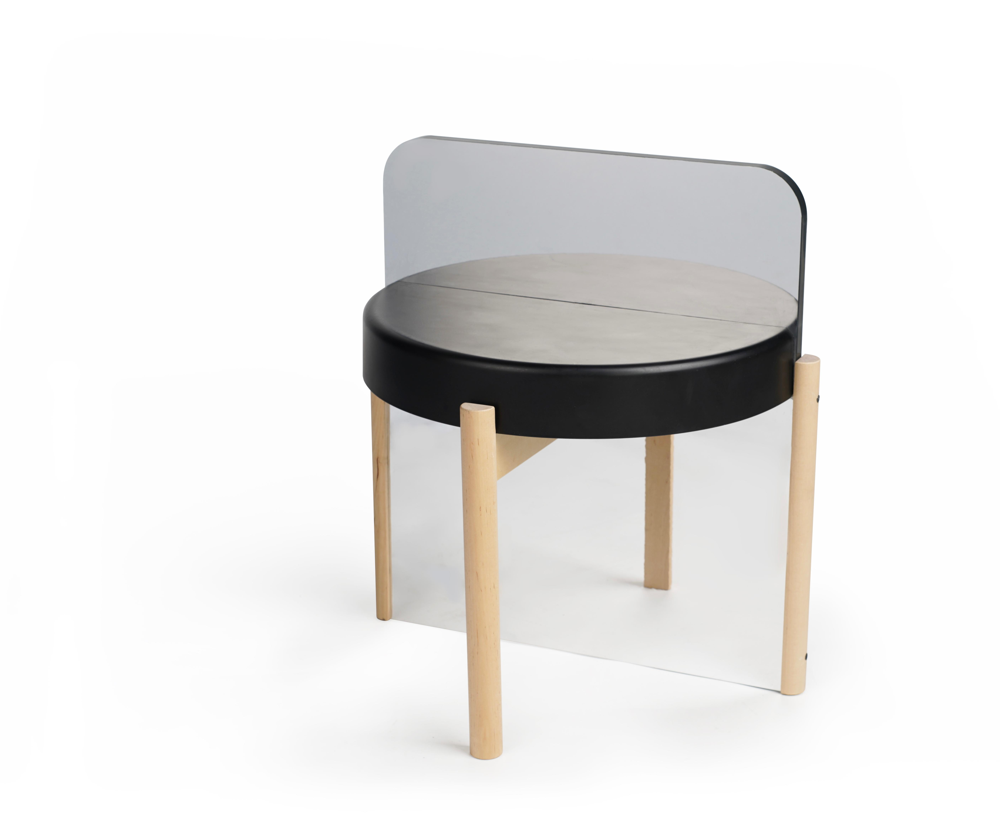

IKEAEKI
1+1

黑客精神在这里是挑战，挑战人的常规性体验。此外“黑客”一词本身 带有科技感。凳子主体使用了带有强烈宜家特色的边桌，引入镜面来延伸空间，同时也消隐了凳子本身，使虚拟与现实借凳面这个媒介相互交错，挑战人的视觉与思维，进而给予人新奇的体验。
The hacker spirit here is a challenge, challenging people's conventional experience. In addition, the term "hacker" itself has a sense of technology. The main body of the stool uses a side table with strong IKEA characteristics, introducing a mirror surface to extend the space, while also concealing the stool itself, so that virtual and reality are intertwined through the medium of the stool surface, challenging people's vision and thinking, and giving people Novel experience.